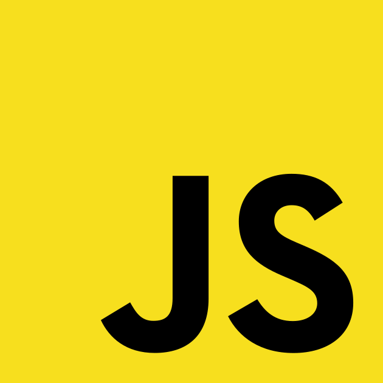

10mentionweb
Glossaire
- La console
- Zone permettant de consulter les messages
produits par JS
- Instruction
- Unité de code à lancer; fonctionne souvent ligne par ligne
- Binaire
- Fichier lisible et exécutable par l'ordinateur
- Compiler
- Analyser un code et fabriquer un binaire
- Échapper des caractères
- Enlever sa fonction à un caractère afin de simplement l'afficher
- Interpréter
- Analyser un code et le faire exécuter à l'ordinateur
- Chaîne vide
- Un caractère signifiant qu'une chaîne est vide
- Saut de ligne
- Un caractère signifiant que le logiciel doit afficher un retour à la ligne
- Concaténer
- Rabouter 2 chaînes de caractère en une seule
- Caster
- Opération de conversion d'un type de données dans un autre
- Syntaxe
- convention d'écriture d'un code informatique concernant l'utilisation d'un certain nombre de symbole, de mot-clé et de règle d'écriture du code
- Variable
- Élément de programmation qui va servir à contenir quelque chose : nombre, chaîne, etc. et sera enregistré au moyen d'un nom. ex : let bidule = 12
- Mot-clé
- Un mot-clé est un mot "compris" ou ayant un sens en JS; ex : let
- Assignation
- Assigner une variable est lui attribuer une valeur
ex : en JS, on utilise le symbole =
- Incrémentation
- C'est le fait d'ajouter un incrément à une variable et de lui assigner le résultat de l'opération